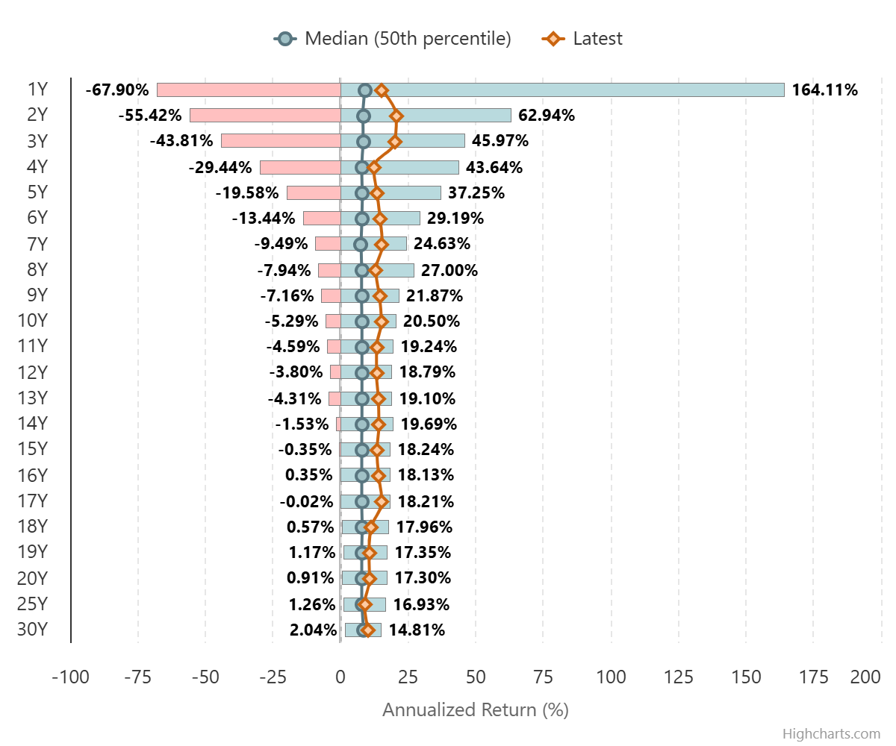
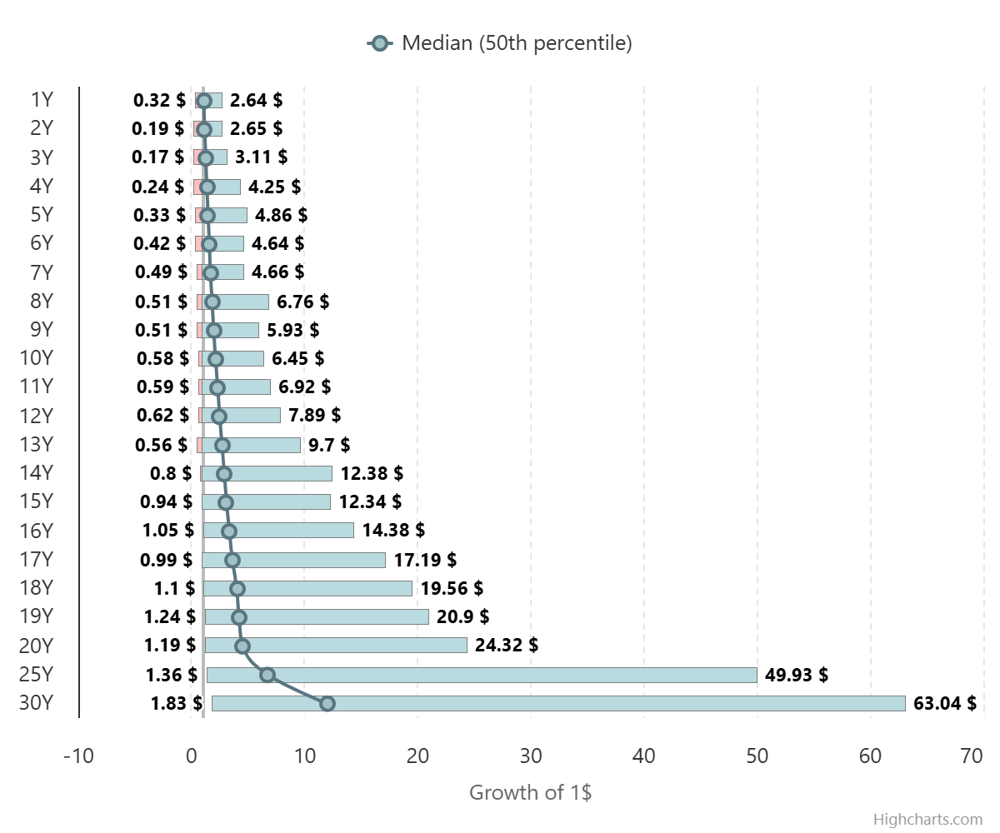

Nel grafico sotto è riportato il rendimento annualizzato, tipicamente chiamato CAGR in finanza (Compound Annual Growth Rate). Il rendimento è nominale, lordo ed include i dividendi. Per un investitore italiano, bisogna togliere la tassazione sui dividendi, la tassazione sulla plusvalenza ed inserire il cambio lira/dollaro prima ed EUR/dollaro poi.
Come potete vedere, il rendimento netto annualizzato medio è del 9.5%, ma nel 95% delle simulazioni tale rendimento oscilla fra il 5.9% e il 13.2%. Non sembrerebbe una grossa oscillazione, poiché si parla di poco più di un fattore 2 tra il limite inferiore e il limite superiore della banda.
Ma è proprio qui che sta l'inganno. Il rendimento annualizzato, difatti, non è altro che la radice n-esima del rendimento totale e questa operazione, su un investimento di 30 anni, schiaccia la variazione dei rendimenti. Se ci spostiamo sul grafico ancora sotto, dove vengono rappresentati i rendimenti totali, vediamo come in realtà la variazione fra il limite inferiore e il limite superiore è in realtà di quasi un fattore 10.
📌 Se da un lato è corretto affermare che nel passato un qualunque investimento trentennale sull'indice S&P 500 ha offerto un rendimento nominale decisamente positivo, dall'altro non possiamo affatto affermare che il rendimento dell'azionario converge con l'allungarsi del periodo.
Entrare ed uscire nel momento giusto vs entrare ed uscire nel momento sbagliato, avrebbe prodotto una differenza di un fattore 10 (+400% contro +4000%).
I grafici mostrano come cambiano i rendimenti in base al periodo di detenzione: Le candele mostrano le fluttuazini e evidenziano il 90% percentile dei risultati e la mediana. Inoltre in arancione viene mostrato l'andamento dell'ultimo portafoglio osservato (esempio quello degli ultimi 1, 2, ..., 30 anni).
In sintesi: investire a lungo termine può aumentare le probabilità di rendimento positivo, ma non elimina completamente il rischio.
Per approfondire la questione allego il paper del 2010 di Andrea Malagoli, Stocks for the Long Run: Historical Facts and Statistical Fallacies disponibile qui.
Inoltre consiglio la lettura del libro di Jeremy Siegel, Stocks for the Long Run, disponibile in italiano come "Azioni per il lungo periodo".
Infine, per chi fosse interessato ad un'analisi più tecnica sugli investimenti a lungo termine, consiglio il paper di Robert Shiller, Irrational Exuberance, che include i dati storici utilizzati in questo studio.
Altri modi di vedere gli stessi dati, da Lazy Portfolio ETF
 